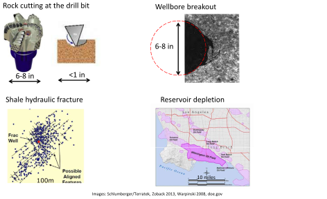
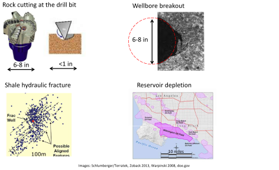

Next: 5.4.2 Tensor method Up: 5.4 Determination of normal Previous: 5.4 Determination of normal Contents
The 3D Mohr circle is a graphical representation of the stress tensor and all its projections (or possibles values of normal stress and shear stress  ) on a given plane.
Consider a horizontal plane in Fig. 5.18, the normal stress is the vertical stress
) on a given plane.
Consider a horizontal plane in Fig. 5.18, the normal stress is the vertical stress  and there is no shear stress.
Consider a vertical plane with strike East-West in Fig. 5.18, you get the minimum principal stress
and there is no shear stress.
Consider a vertical plane with strike East-West in Fig. 5.18, you get the minimum principal stress  .
Consider a vertical plane with strike North-South in Fig. 5.18, you get the maximum principal stress
.
Consider a vertical plane with strike North-South in Fig. 5.18, you get the maximum principal stress  .
.
Likewise, non-trivial solutions of stress projection at an arbitrary plane angle include all the points delimited by the three Mohr circles. Let's consider solutions along each circle in Fig. 5.18.
 and
. The shear stress and normal effective stress of any plane in between the planes of and
and colinear with
and
. The shear stress and normal effective stress of any plane in between the planes of and
and colinear with
 can be found through the angle measured from .
can be found through the angle measured from .
 and
. The shear stress and normal effective stress of any plane in between the planes of
and
and colinear with
can be found through the angle
and
. The shear stress and normal effective stress of any plane in between the planes of
and
and colinear with
can be found through the angle  measured from
and
. The shear stress and normal effective stress of any plane in between the planes of
and
and colinear with
can be found through the angle  measured from
measured from
and
. The shear stress and normal effective stress of any plane in between the planes of
and
and colinear with
can be found through the angle  measured from
For this example (normal faulting, azimuth E-W), a fault would occur with a strike E-W and dip 60 (assuming
). This is the orientation and point for maximum
(assuming
). This is the orientation and point for maximum
 .
.
PROBLEM 5.3: Find the shear and normal effective stresses on a fault plane within the following state of stress and conditions:
, dip = 60.
 23 MPa (principal),
23 MPa (principal),
 20 MPa,
20 MPa,
 13.8 MPa (azimuth: 090), and
13.8 MPa (azimuth: 090), and  10 MPa.
10 MPa.
SOLUTION
![\includegraphics[scale=0.65]{.././Figures/split/6-3DMohrCircleP1.pdf}](img548.svg)
 13 MPa,
13 MPa,
 10 MPa,
10 MPa,
 3.8 MPa.
Based on the Mohr circle of with
and trigonometry:
3.8 MPa.
Based on the Mohr circle of with
and trigonometry:

PROBLEM 5.4: Find the shear and normal effective stresses on a fault plane within the following state of stress and conditions:
E, dip: 90.
30 MPa (principal),
45 MPa,
25 MPa (azimuth: N30E), and 15 MPa.
SOLUTION
![\includegraphics[scale=0.65]{.././Figures/split/6-3DMohrCircleP2.pdf}](img554.svg)
The effective stresses are:
15 MPa,
30 MPa,
10 MPa.
Based on the Mohr circle of
with
and trigonometry:

![\includegraphics[scale=0.75]{.././Figures/split/6-3DMohrCircle.pdf}](img546.svg)